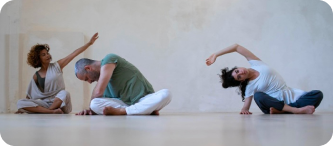

Аудио формат. Короткие, легкие уроки, не требующие специальных условий и навыков
Учишься слышать тело — и оно отпускает напряжение и боль
ТАКЖЕ В ПОДАРОК:
живая групповая практика в клубе под моим вниманием (не продаётся отдельно)
Для тех, кто уже пробовал телесные практики, но…
Всё ещё чувствуют постоянное напряжение — в спине, шее, челюсти, плечах
Продолжают тревожиться и не могут по-настоящему отдохнуть, даже когда «расслабляются»
Ищут способ быть с собой не через контроль, а через тёплое внимание
Не хотят больше «собираться» и «справляться», а хотят жить в теле, которому можно доверять
Хотят научиться слушать тело — ни заставлять, ни тянуть, а замечать, как оно живёт прямо сейчас
Про автора
Привет, я Виктория Шевчук
Я практикую осознавание через движение уже 12 лет
Обучалась методу в Тель-Авиве — на курсе, сертифицированном Международной Федерацией Фельденкрайза (IFF) и европейской системой EuroTAB
Мне не близка идея «лечить» или «исправлять». Я лишь помогаю тебе распознать, где тело держит напряжение, и мягко освободить его через внимание к ощущениям.
Этот курс может стать началом новых отношений с телом — более доверительных и живых. Чувствительность углубится, движения станут мягче, а в теле появится больше покоя. Возможно, уйдёт и хроническая боль.
Уже после первого занятия — всего 20 минут —ты почувствуешь, как напряжение начинает таять.
Здесь не будет тренировок. Не нужно стараться или добиваться результата. Всё, что по-настоящему работает, рождается из внимания. Тело знает, как отпустить, если ему не мешать.
отзывы
ПРОГРАММА курса
автор курса виктория шевчук
урок 1
24 минуты
ЛЕГКОСТЬ ПОВОРОТА
Урок про мягкость и подвижность. Повороты — без усилий, через интерес. Без растяжки, без терпения — только внимание к ощущениям. Позвоночник оживает, а движения становятся лёгкими и естественными.
урок 2
21 минута
ПРОСТОР ДЛЯ ПОЯСНИЦЫ
В этом уроке мы мягко пробуждаем поясницу и таз — не через усилие, а через ощущение удобства. Ты почувствуешь, как уходит глубинное напряжение, и поясница перестаёт «держать» всё на себе. Это 21 минута тёплой заботы о месте, которое давно просит внимания.
урок 3
18 минут
ДЛИННЫЙ И ГИБКИЙ ПОЗВОНОЧНИК
Урок про внутренний стержень и естественную опору. Ты почувствуешь, как спина может быть прямой — не из напряжения, а из внутренней поддержки. Мягкие движения расправляют позвоночник, возвращают гибкость и достоинство — без контроля и усилия.
урок 4
20 минут
ПЛЕЧИ, КОТОРЫЕ МОГУТ ОТПУСТИТЬ
Урок о том, как перестать тащить на себе лишнее. Мягкие движения помогают плечам расслабиться, а телу — отпустить накопленное. Боль уходит, дыхание становится свободнее, руки — легче. Как будто ты наконец кладёшь то, что давно пора отпустить.
урок 5
20 минут
ПОЛНОЕ ДЫХАНИЕ
Урок о живом, естественном дыхании. Без усилий, без «как правильно» — просто внимание.Ты почувствуешь, как грудная клетка раскрывается изнутри, а дыхание становится полным и свободным. Как вдох, в котором всё возможно.
урок 6
20 минут
ТЕЛО, КОТОРОЕ НАХОДИТ РАВНОВЕСИЕ
Урок не про то, чтобы стать правильной. А про то, как тело само находит баланс, когда его не исправляют. Ты почувствуешь, как всё выравнивается изнутри — без натяжения, без усилий. И движения становятся лёгкими и естественными.
урок 7
22 минут
СТОПЫ, КОТОРЫЕ ЗНАЮТ КУДА ИДТИ
Урок про стопы, устойчивость и внутреннюю опору. Ты мягко пробуждаешь чувствительность ног, возвращаешь гибкость и уверенность шагу. Это про контакт с землёй — когда можно стоять и идти, не сжимаясь, а опираясь на себя.
урок 8
20 минут
ЛИЦО, КОТОРОЕ ОТПУСКАЕТ(рот и челюсти)
Урок про лицо, челюсть и то, что мы привыкли сдерживать. Ты мягко исследуешь движения рта и щёк — и напряжение начинает таять. Расслабляется челюсть, уходит тяжесть в шее и голове. А лицо становится живым. Тёплым. Твоим.

урок 9
24 минут
ЛИЦО, КОТОРОЕ ОТПУСКАЕТ(рот и челюсти)
Урок про внутреннюю опору и ощущение центра. Ты мягко пробуждаешь центр тяжести — без напряжения, без «тонуса». Таз становится подвижным, тело — устойчивым и собранным. Это особенно ценно, если ты часто сидишь и чувствуешь, что застряла в теле.
урок 10
24 минут
ЦЕНТР, КОТОРЫЙ ВСЕ ДЕРЖИТ
Урок про внутреннюю опору и ощущение центра. Ты мягко пробуждаешь центр тяжести — без напряжения, без «тонуса». Таз становится подвижным, тело — устойчивым и собранным. Это особенно ценно, если ты часто сидишь и чувствуешь, что застряла в теле.
урок 11
24 минут
СМОТРЕТЬ С ЛЕГКОСТЬЮ (глаза, часть 1)
Урок про мягкий взгляд и свободу в восприятии. Ты координируешь движения глаз, головы и тела — через внимание, не усилие. Уходит напряжение из глаз, шеи, плеч. Взгляд становится спокойным, тело — отзывчивым, а зрение — яснее и свободнее.
урок 12
19 минут
СМОТРЕТЬ И РАССЛАБЛЯТЬСЯ (глаза, часть 2)
Продолжение мягкой работы с глазами — ещё глубже. Ты исследуешь движения, которые расслабляют глаза, шею и лицо. Взгляд становится шире и легче, голова — подвижнее, а тело — целостным. Это не про «видеть лучше», а про «видеть легче».
урок 12
Живая встреча в клубе — поддержка, внимание, пространство
Это часовая практика в онлайн-клубе на платформе zoom, где ты сможешь почувствовать, как работает поддержка в живом пространстве.
Ты не одна. Мы встречаемся в кругу — с другими женщинами, которые тоже учатся слышать тело.
Я провожу тебя в реальном времени через практику, а после — отвечаю на любые вопросы, которые могли возникнуть во время курса.
Это не просто дополнение. Это место, где ты получаешь подтверждение:
ты можешь доверять телу, и оно знает путь.
Эта встреча отдельно не продаётся и доступна только участницам курса.
смотреть всю программу
КАК ПРОХОДяТ УРОКИ?
После оплаты ты получишь доступ к урокам в Telegram. Они будут приходить каждый день в 19:00, но проходить их можно в любое удобное время
Просто надень наушники, сядь удобно и следуй за голосом. Мы сделали курс максимально лёгким и понятным
Доступ к материалам остаётся навсегда — ты сможешь возвращаться к ним в любое время, когда захочешь
чему ты научишься на курсе?
Ты научишься расслаблять спину, плечи, шею, стопы, лицо и глаза — в любых условиях: дома, на работе или даже в самолёте
Даже если нет времени, всё болит или ты не умеешь расслабляться — у тебя всё получится. Это проще, чем кажется
Ты начнёшь замечать, как тело оттаивает. Напряжение уходит из спины, шеи, живота и лица. Становится легче дышать
Ты почувствуешь, как внутри появляется спокойное “да” — себе, телу, жизни. Без усилий, без давления
Практикуя на слух, ты начнёшь слышать своё тело по- настоящему. Чувствовать, где устала, где зажалась.
И главное — отпускать. Мягко, с доверием. Без насилия. С уважением к себе и своим ощущениям.
отзывы
ПРИСОЕДИНЯСЯ к курсу уже сейчас
по специальной цене всего за
9$
49$
00
часа
59
минут
59
секунд
P.s. Ты ничем не рискуешь. Если курс тебе не подойдёт, я верну деньги без лишних вопросов.
ГАРАНТИЯ ЭФФЕКТИВНОСТИ
Если, пройдя всего один урок, ты не почувствуешь никаких изменений, просто сообщи нам, и мы вернём деньги — без вопросов
частые вопросы
Да, это важно. Первые занятия — как мягкое знакомство с собой: там я рассказываю, как двигаться без усилия, как чувствовать себя в процессе, на что обращать внимание и почему это делает практику глубокой. Каждый следующий урок — это шаг, основанный на предыдущем.
Как если бы ты прокладывала тропинку к себе: шаг за шагом, с доверием к процессу.